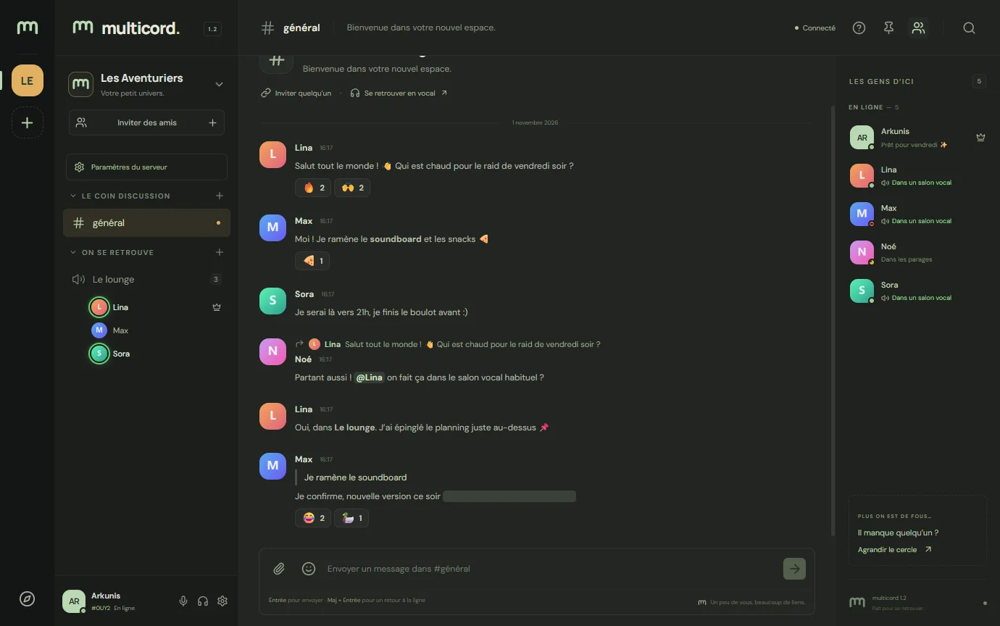
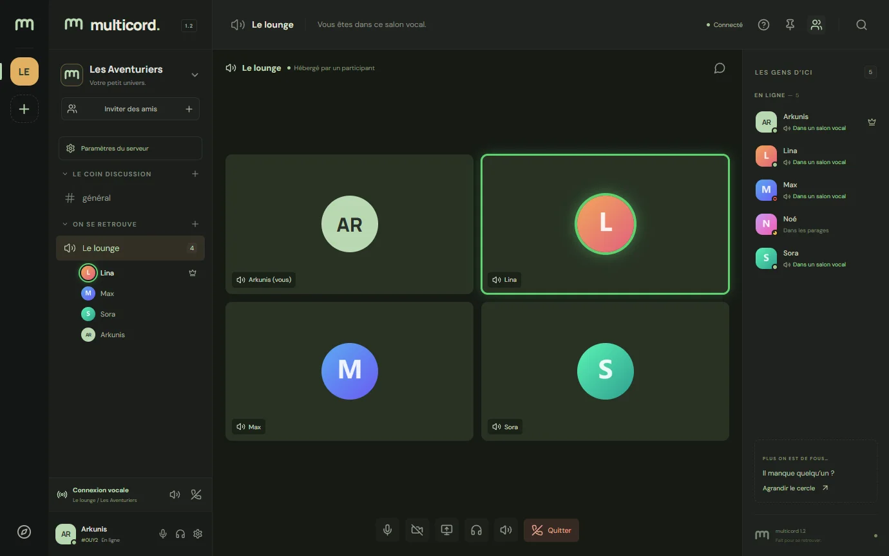
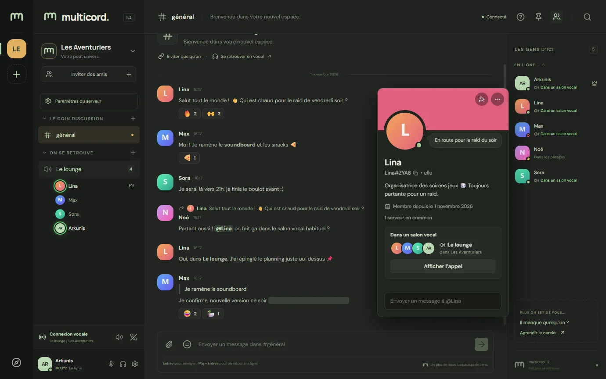
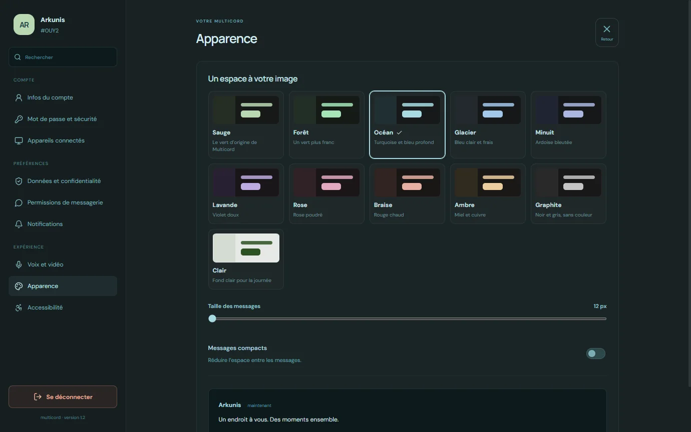

Serveurs et salons
Salons textuels et vocaux rangés en catégories, privées ou ouvertes. Glissez-déposez pour réorganiser.
Multicord réunit vos amis et vos communautés : salons de discussion, appels vocaux avec partage d’écran, messages privés et rôles. Sur votre propre serveur, à votre rythme.

Salons textuels et vocaux rangés en catégories, privées ou ouvertes. Glissez-déposez pour réorganiser.
Vocal, caméra et partage d’écran. Un halo montre qui parle, et la réduction du bruit par IA efface clavier et ventilateur.
Réponses, réactions, mentions, mise en forme, emojis et fichiers jusqu’à 5 Mo. Modifiez ou transférez un message en un clic.
Permissions fines, hiérarchie des rôles, mute pour tous, expulsion, bannissement et pseudo par serveur.
Statut personnalisé, bio, bannière, et présence en ligne, absent, ne pas déranger ou invisible.
Sauge, Océan, Lavande, Ambre, Graphite, Clair… Choisissez l’ambiance qui vous ressemble.
L’application se met à jour toute seule en arrière-plan. Un redémarrage, et c’est fait.
Aucune publicité, aucune télémétrie. Le code est public et vous pouvez héberger votre propre serveur.

Les tuiles s’illuminent au rythme des voix, l’appel continue même si l’hôte s’en va, et chacun règle le volume des autres de 0 à 200 %. La reconnexion est automatique en cas de coupure.

Statut, bio, pronoms, amis et serveurs en commun, salon vocal en cours : tout est sur la fiche, avec un champ pour écrire directement en privé.

Onze palettes, un thème clair pour la journée, la taille du texte et l’affichage compact. Vos préférences vous suivent sur tous vos appareils.
Pour Windows 10 et 11 (64 bits). Gratuit, sans compte à créer pour télécharger.
S’installe en quelques secondes et se met à jour automatiquement. Raccourcis sur le bureau et dans le menu Démarrer.
Télécharger l’installateur Fichier .exeAucune installation : un seul fichier à lancer, pratique sur une clé USB. Elle vous prévient quand une nouvelle version sort.
Télécharger la version portable Fichier .exeLes fichiers ne sont pas encore signés numériquement : la signature gratuite pour les projets open source est en cours de mise en place. Cliquez sur Informations complémentaires puis Exécuter quand même. Les fichiers sont construits automatiquement à partir du code public.
Oui. Multicord est un logiciel libre sous licence AGPL-3.0 : pas d’abonnement, pas de publicité, pas de fonctions payantes.
Avec l’installateur, Multicord vérifie régulièrement s’il existe une nouvelle version, la télécharge en arrière-plan et vous propose de redémarrer. Si vous fermez simplement l’application, la mise à jour s’installe au prochain lancement. La version portable vous prévient et vous renvoie vers cette page.
Sur le serveur Multicord auquel vous vous connectez : celui de votre groupe ou le vôtre. L’application ne contacte aucun autre service, et la réduction du bruit fonctionne entièrement sur votre ordinateur.
Oui. Le serveur fonctionne avec SQLite ou PostgreSQL. Le guide sur GitHub explique comment le lancer et l’ouvrir sur internet en HTTPS.
L’application de bureau est disponible pour Windows. Sur les autres systèmes, Multicord s’utilise dans le navigateur, à l’adresse du serveur de votre groupe.